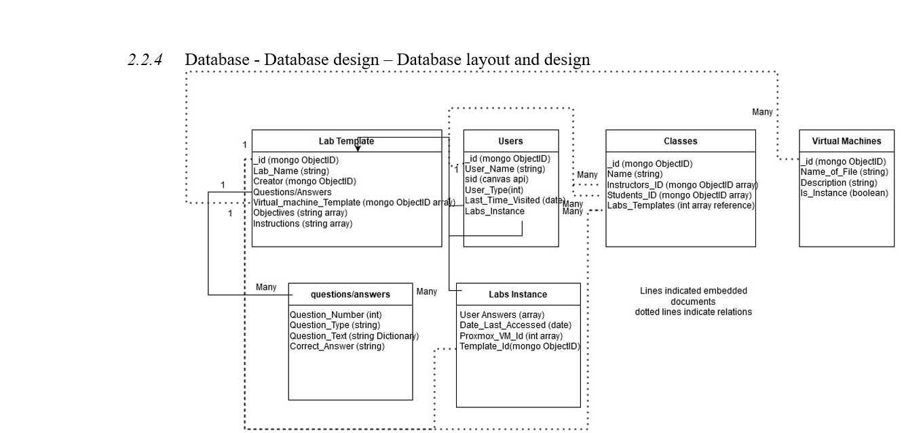

Description: CyberLab is a web-based platform designed to provide hands-on cybersecurity lab exercises to students at the University of Wisconsin–Platteville.
Technologies Used: Angular, Node.js, MongoDB, Proxmox API
Key Features:
My Role: Designed and implemented the backend API, contributed to frontend development, and conducted unit testing.
Outcome: Delivered a fully functional VM server and a responsive web application.
Below is a sample code snippet demonstrating the insertion of a lab into the CyberLab database. It highlights features like database interactions, query functionality, and lab creation:
Below are screenshots demonstrating backend contributions, including MongoDB integration, API documentation, route registration, and error handling:
Description: Code for connecting to MongoDB and handling connection errors.
Description: Swagger integration for documenting and testing CyberLab APIs.
Description: High-level router registration for modular API structure.
Description: Middleware for handling errors and logging requests with status codes.
Below are visuals showcasing the CyberLab dashboard and architecture:
